1. はじめに
本システムは、モバイルオーダーとレジシステムを組み合わせた一体型WEBシステムです。
スタッフの注文・会計ミスによるトラブルを防ぎ、回転効率を高める目的のものであり、
オートディスペンサーには非対応のためあらかじめ留意してください。
2. 注意事項
1. システム利用における注意事項
1-1. PINを他の人に見せないでください。
システムは役割ごとに別のPINが割り振られています。第三者に知られると予期せぬ操作や
トラブルの原因となるため、厳重に管理してください。
PINを何度も間違えると、一定時間アクセスできなくなります。
1-2. 不要な操作は避けてください。
処理が重いときに連続でボタンをタップしたり、ブラウザの「進む」「戻る」ボタン等を使用すると、
思わぬトラブルの原因となります。
システム上サーバーを介しているため、更新に時間がかかる場合があります。
反応がない場合に限り、時間を置くか一度リロードしてください。
1-3. 管理者画面の操作について
管理者画面はシステムの設定に関わるので、誤操作を防ぐため
管理者および責任者以外のスタッフはアクセスしないでください。
設定変更や確認が必要な場合は、必ず担当者へ相談·報告してください。
1-4. インターネット・Wi-Fi接続が必要になります。
画面右上に接続の状態を表すステータスがあります。「接続中」なら利用可能です。
「再接続中…」なら接続するまで待つか、インターネット・Wi-Fiの接続を確認してください。
1-5. 使い終わったら、ログアウトしてください。
各画面の右上に「ログアウト」ボタンがあります。端末を他の人に渡すときや、持ち場を離れるときに使ってください。
「ログインの有効期限が切れました」と出たときは、もう一度PINを入力してログインします。
3. 使い方
スタッフが使う画面は、次の3つです(お客様は、各卓のQRコードから開きます)。
どの画面も、はじめにPINを入力してログインします。
3-1. お客様画面
お客様が、スマホで使う画面です。お客様に聞かれたときの参考にしてください。
お客様の流れ
１．QRを読み込む
２．人数・ドリンクを選択 参照：画像#1, #2
[-],[+]で数字を変更できます。変更したら、「次へ」,[メニューへ]で進めます。
※ドリンクは人数分選択できます。
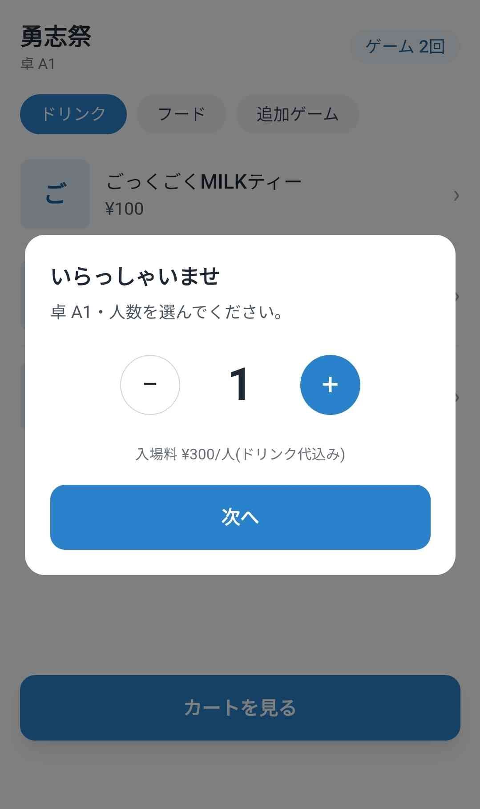
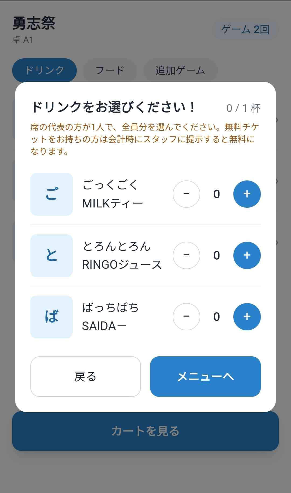
３．メニューを注文(任意) 参照：画像#3
メニューはそれぞれ[ドリンク][フード][追加ゲーム]に分かれています。
注文の流れ
1. ほしい商品をタップ
2. 数を選択
3. カートを開き、合っていれば注文を確定
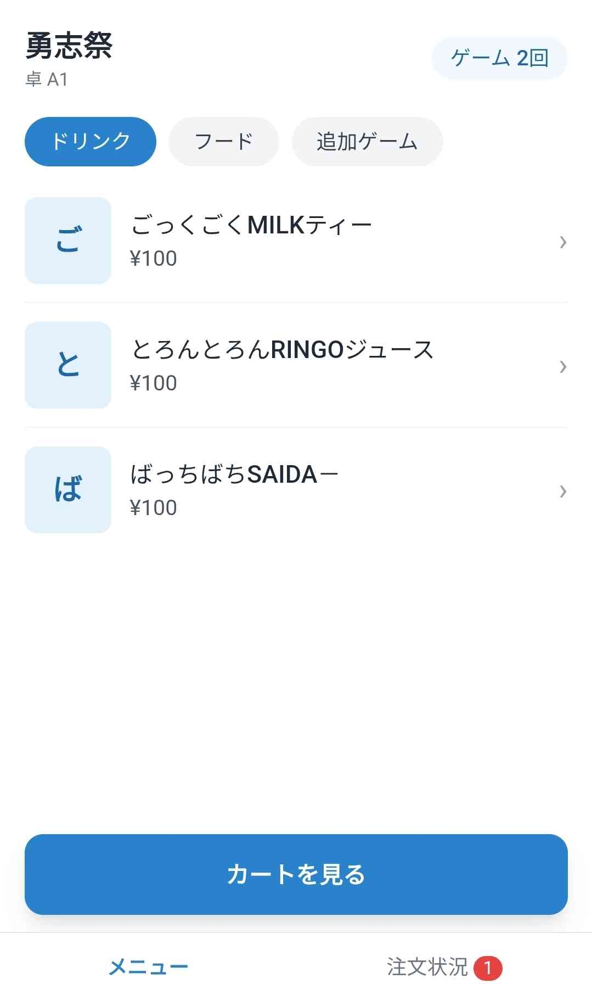
４．会計 参照：画像#4-1, #4-2, #4-3
最後に会計するときの画面です。
会計の流れ
1. 注文状況を開き、「会計する」ボタンをタップ
2. 問題がなければそのまま「会計に進む」をタップ
※届いていない商品があればスタッフが対応してください。
3. スタッフの指示に従って会計。※現金のみ対応
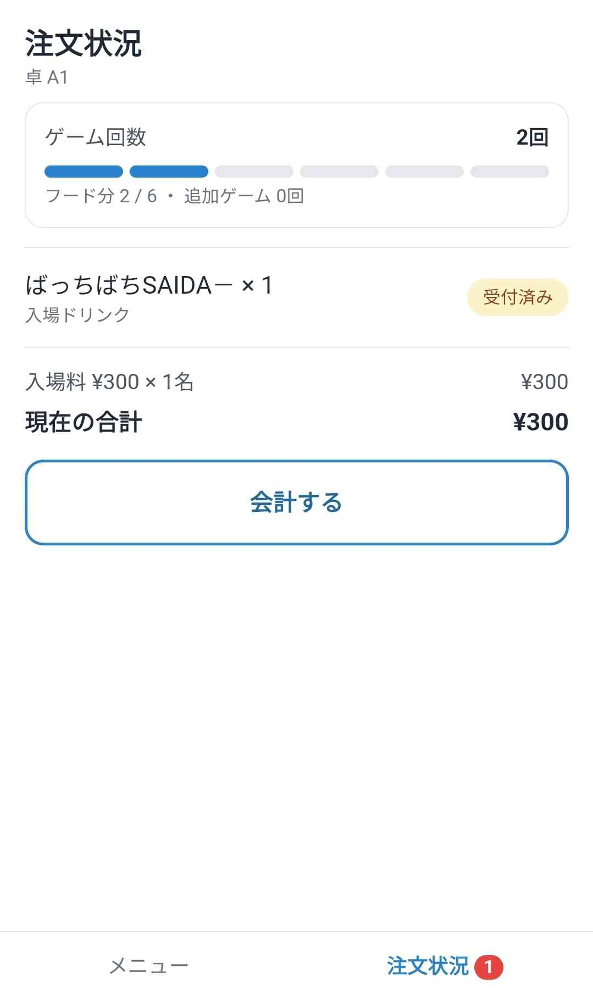
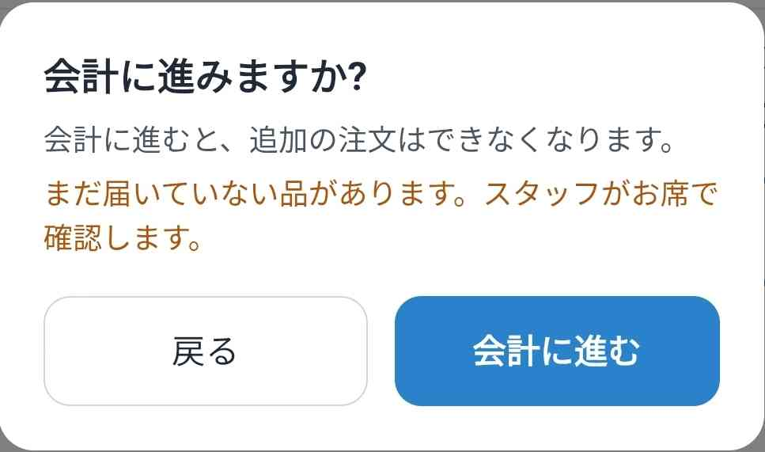
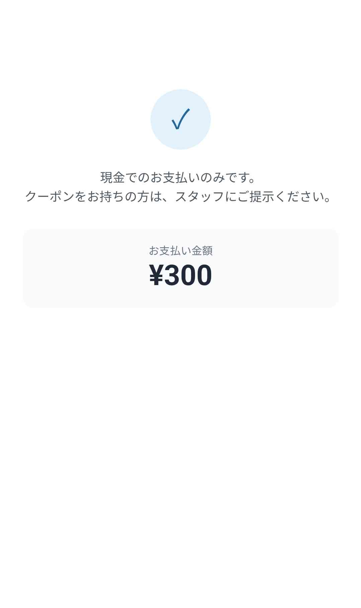
3-2. レジ画面
1-1. 「会計中」と表示されている、卓番号をタップします。 参照：画像#1-1
卓番号とお客様を間違えないようにしてください。
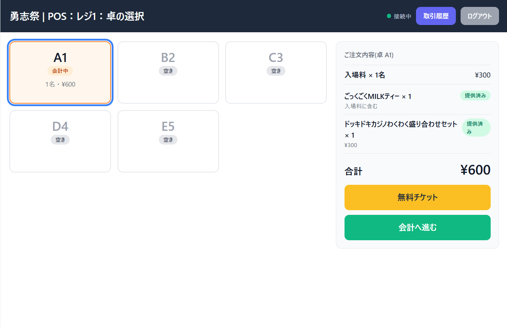
1-2. 中学生向けの無料チケットを適用させてください。 参照：画像#1-2
適用した人数分の入場料(300円)が引かれます。
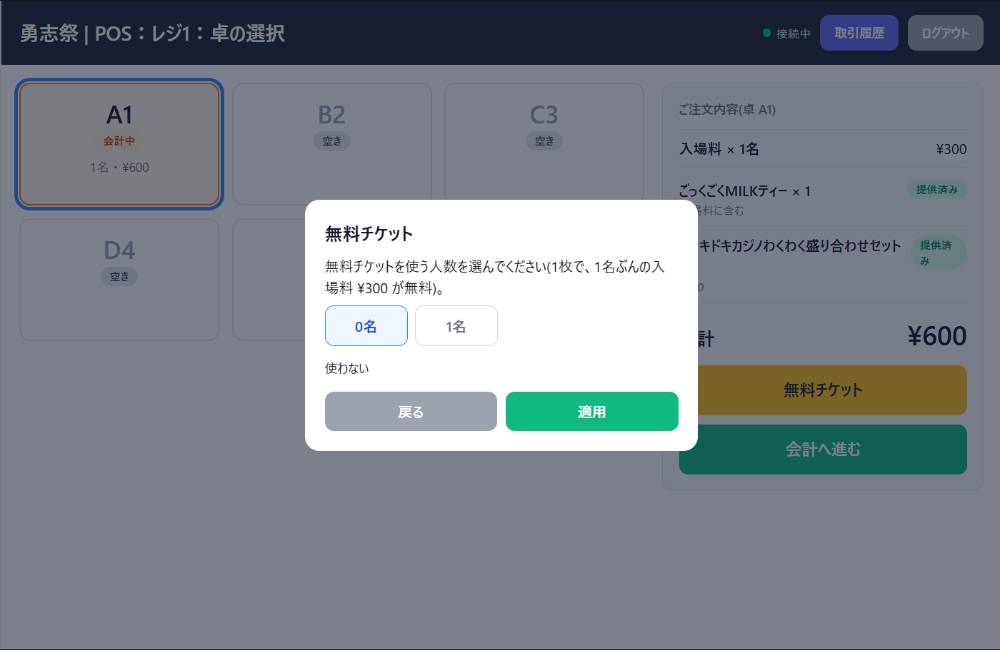
2. 「会計へ進む」をタップし次の画面へ進んでください。 参照：画像#2
お預かりした金額を入力し、確定したら「会計確定」ボタンをタップしてください。
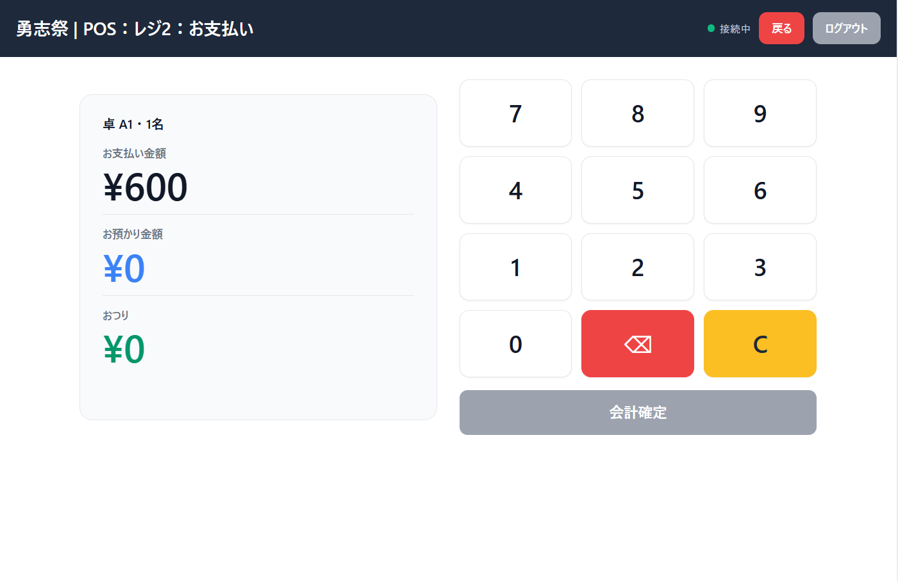
3. お会計の最終画面で、確認にご利用ください。 参照：画像#3
左側のお釣り内訳でどの金種を何枚渡せばよいか表示されます。
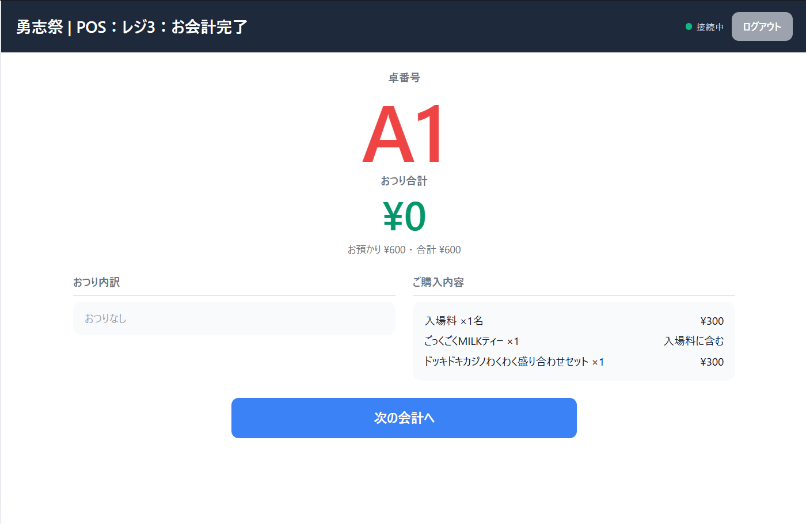
4. 取引履歴 参照：画像#4
過去のすべての取引の履歴を確認できます。
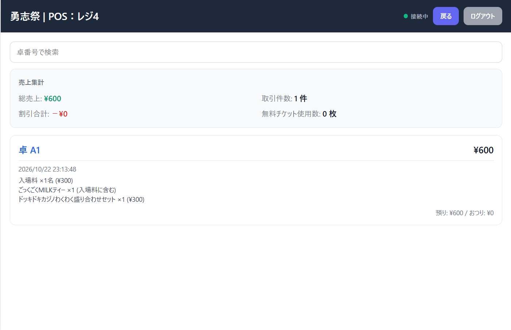
3-3. 注文受注画面(Cafe)
1-1. 「未提供」の画面で、注文が入った卓のカードを確認します。 参照：画像#1-1
注文は自動で表示されます。待ち時間が長くなるとカードの色が変わるので、優先して対応してください。
※「入場」のマークは入場ドリンクです。トッピングはフードの下に表示されます。
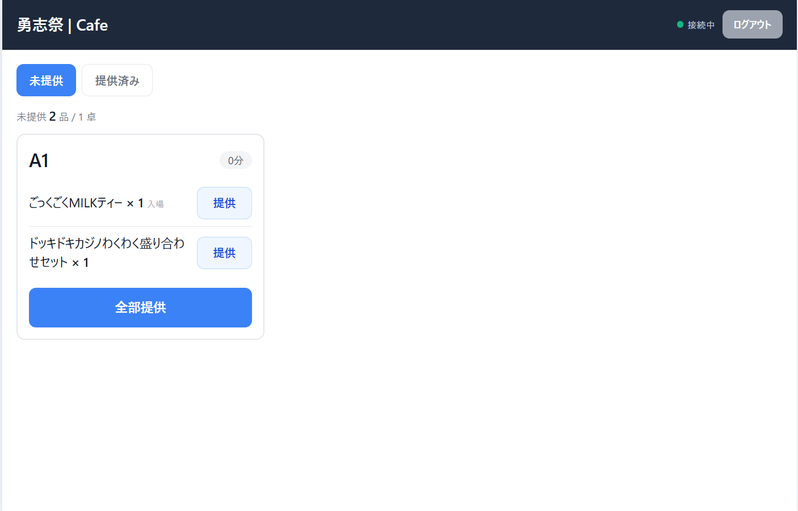
1-2. 品を出したら、その行の「提供」をタップします。 参照：画像#1-2
「提供しますか?」と確認のポップアップが出るので、卓と品名を確認して「提供する」をタップしてください。
※卓の品を全部出したときは、カード下の「全部提供」が便利です。
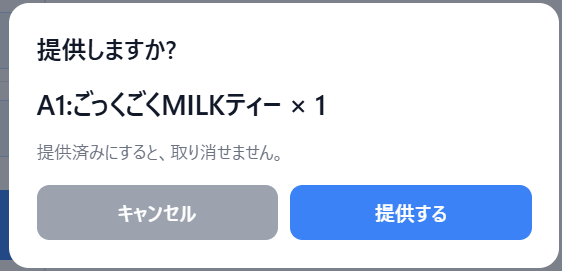
2. 出した品は、「提供済み」で確認できます。 参照：画像#2
出したか分からなくなったときに使ってください。
※提供したあとは取り消せません。お客様の画面も「提供済み」に変わります。
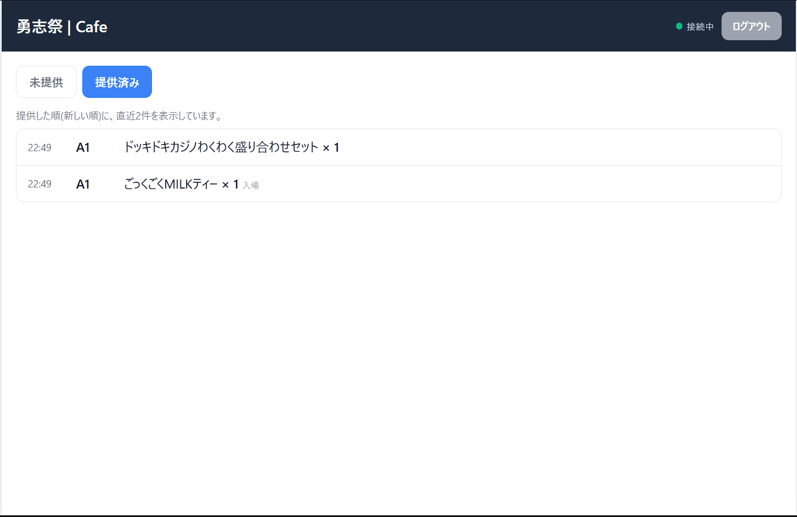
3-4. 管理者画面
管理者画面は一部の人のみアクセスが許可されています。設定変更や確認が必要な場合は、 必ず担当者へ相談·報告してください。
4. トラブル時
トラブル・不具合が発生したら自分で解決しようとせずに、システム管理者に報告してください。